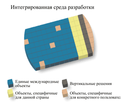
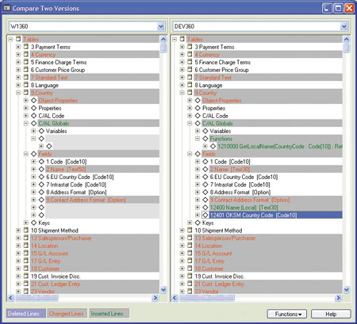
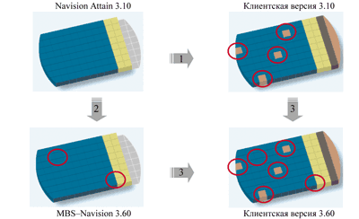
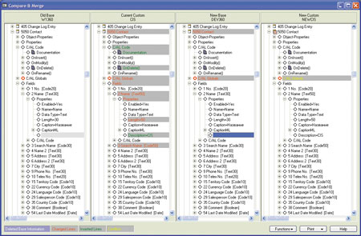

Станислав Песоцкий,
разработчик, Microsoft Business Solutions
stanp@microsoft.com
Кто на новенького?
Прогресс, как бы к нему ни относиться, неумолим. Прогресс в области информационных технологий идет стремительно, и развитие систем управления предприятием - не исключение. Из года в год выходят новые версии, а затем к ним вдогонку пакеты обновлений (SP, service pack) и/или оперативные исправления (HF, hotfix). Исправления неизбежно будут существовать, пока люди не научатся работать без ошибок, что невозможно в силу человеческой природы. Однако разработчики предпочитают видеть причину постоянных обновлений и выпуска новых версий приложений в постоянном развитии технологий и в растущих потребностях клиентов. Кто, например, лет пять назад всерьез задумывался о важности блока управления взаимоотношениями с клиентами (Customer Relationship Management, CRM)? А сегодня любая динамично развивающаяся фирма считает наличие такого функционала необходимым условием работы, дающим конкурентные преимущества и обеспечивающим уверенность в будущем ее бизнеса. Кроме того, существует еще один источник постоянных нововведений - государство. В нашей стране оно не позволяет расслабиться, регулярно меняя правила и выдавая все новые требования, которые приводят как минимум к изменению печатных форм документов и отчетов.
Дополнительная причина перехода на последние версии ПО кроется в том, что поставщики программных продуктов зачастую не в состоянии в полном объеме сопровождать всю линейку ранее выпущенных версий. Естественное объяснение этому факту - недостаток ресурсов. В то же время поддержка клиентов, использующих последнюю версию, всегда имеет наивысший приоритет. Поставщик заинтересован в совершенствовании и развитии своего продукта.
Одна из возможностей гарантировать сохранность инвестиций клиента и обеспечить его наиболее свежими, инновационными разработками - это подписка на обновление версий. Она оформляется в момент покупки системы и длится определенное время, в течение которого клиент получает все обновления бесплатно. Деньги, вложенные в эту программу, выступают как инвестиции в развитие продукта, который обеспечивает функционирование фундаментальных бизнес-процессов предприятия. Возобновление подписки после многолетнего перерыва обойдется значительно дороже, чем ее постоянное продление.
Бывает, предприятие работает со старой доброй системой, которая хоть звезд с неба и не хватает, но делает все добротно и с достаточным на какой-то момент качеством. Но рано или поздно накопленный груз нереализованных возможностей и требований все же заставит сделать обновление, только оно будет стоить значительно дороже и займет больше времени.
Давайте исходить из того, что делать обновления надо, и делать их надо своевременно. Возникает вопрос - что мешает следовать этому простому правилу?
Палка о двух концах
Если обновление закрытой системы (например, ОС Microsoft Windows) обычно проходит очень быстро и легко, то обновление открытой системы несет в себе сложности, степень которых зависит от множества факторов. Чем больше и сложнее система и чем больше было внесено изменений, тем сложнее ее обновить. Это справедливая плата за гибкость и простоту адаптации продукта.
Microsoft Business Solutions-Navision - это достаточно сложная, комплексная система с открытой архитектурой (в стандартной российской версии MBS-Navision 3.60 представлено более 3500 взаимосвязанных объектов, из них около 800 таблиц). Navision охватывает широкий спектр задач управления деятельностью предприятия средних размеров (до 100 одновременных пользователей). Ядро системы Navision представляет собой интегрированную среду разработки в архитектуре клиент-сервер (Client/Server Integrated Development Environment, C/SIDE). C/SIDE - это графическая среда с возможностью открытой разработки. Вся бизнес-логика MBS-Navision написана на языке программирования C/AL (Client Application Language), синтаксис которого сильно напоминает язык Pascal.
Большинство объектов приложения содержит код на C/AL, определяющий поведение этих объектов. В системе реализовано пять видов объектов, из которых строится весь функционал приложения:
- таблицы (Tables) - предназначены для хранения информации, состоят из полей различных типов данных;
- датапорты (Dataports) - используются для импорта/экспорта данных в текстовые файлы;
- блоки кода (Code units) - содержат определенные разработчиком функции, написанные на языке C/AL;
- формы (Forms) - обеспечивают доступ к данным, хранящимся в таблицах, ввод новой и просмотр существующей информации;
- отчеты (Reports) - используются для представления данных и вывода на печать.
Каждый объект того или иного вида обладает уникальным числовым идентификатором и уникальным именем. Все множество значений идентификаторов подразделяется на диапазоны (рис. 1). Например, диапазон значений для клиентских объектов - от 50000 до 99999. Это означает, что клиент может создавать новые объекты только в выделенном диапазоне. При этом он имеет право модифицировать существующие объекты других диапазонов: например, вставлять новые поля в уже существующие таблицы, модифицировать код C/AL в любом объекте и т. д.
|  | Рис. 1. Все объекты делятся на четыре основные категории.
|
Изначально разрабатывается единая для всего мира версия, содержащая объекты, обеспечивающие стандартный функционал. Затем осуществляется локализация, которая приводит к появлению уникальных для каждой страны объектов (каждой стране выделен определенный диапазон идентификаторов объектов). В таком виде версия поступает сертифицированным партнерам Microsoft Business Solutions, которые могут регистрировать свои вертикальные решения и продавать их, подключая к стандартной локализованной версии.
Любой проект внедрения ERP-системы по сути уникален, так как каждая компания-клиент обладает индивидуальными особенностями и выдвигает специфические требования, не реализованные в стандартной версии. Необходимая функциональность разрабатывается либо собственными силами ИТ-отдела клиента, либо с привлечением партнеров разработчика (в нашем случае - Microsoft Business Solutions).
Новая версия системы Navision выходит примерно раз в год. Может случиться так, что самостоятельно разработанный клиентом функционал будет полностью или частично реализован в новой версии, либо бизнес-логика системы в части, связанной с клиентской разработкой, изменится настолько, что придется приложить некоторые усилия для переноса функционала при переходе на новую версию. Наибольшие сложности возникнут в том случае, если серьезной модификации подверглись фундаментальные элементы бизнес-логики, измененные в новой версии.
Правильный подход к модификацииСуществуют известные рекомендации по разработке собственного функционала и модификации существующего. Они достаточно просты, а о необходимости документирования, наверное, знают все. К сожалению, не всегда получается тщательно следовать этим рекомендациям, но напомнить их, на наш взгляд, будет нелишне.
|
Как люди делают это
Все обновления поставляются в виде файла, содержащего измененные объекты. В новой версии приложения далеко не все объекты подвергаются модификации. Получить полный набор объектов определенной версии можно путем экспорта всех объектов из демонстрационной базы данных.
Чтобы заменить объекты старой версии, достаточно импортировать новые объекты. Необходимое условие дальнейшей работы - успешная компиляция объектов. На этом этапе обнаруживаются ошибки, связанные с изменением структуры данных, - обращение к несуществующему объекту БД или полю таблицы, несоответствие типов полей или переменных. Однако даже откомпилированные объекты могут приводить к ошибкам, например, правильность вызова функции SETCURRENTKEY (указание текущего ключа таблицы) не отслеживается на этапе компиляции. Данная ошибка обнаружится только в момент исполнения кода.
Импорт таблиц проходит строже. Если таблица содержит данные, то система проконтролирует изменение структуры данных и не позволит завершить импорт таблицы, вызывающей коллизию. Если таблица не имеет записей или обновляемые поля не содержат данных ни в одной из записей, то над полем допустимо любое действие.
Вот основные проблемы, связанные с обновлением структуры БД, содержащей данные.
- Изменение типа поля, не позволяющее его обновить. Это могут быть неприводимые типы (например, недопустимо изменение типа поля Boolean на Integer) или сокращение длины поля для строковых типов (при этом увеличение длины допустимо и не требует дополнительной обработки).
- Изменение идентификатора поля, которое содержит данные, при его удалении или переносе в другой диапазон.
- Изменение первичного ключа таблицы. Например, наличие составного первичного ключа в старой версии и нового первичного ключа, состоящего из одного поля, с высокой вероятностью приведет к возникновению записей с дублирующим первичным ключом, что недопустимо.
- Дублирование имени таблицы при изменении ее идентификатора.
Налицо противоречие - необходимо не потерять данные при том, что обновляемые поля не должны содержать данных!
В зависимости от объема изменений подход может быть разным. В случае c hotfix или SP, когда структура данных редко изменяется, достаточно импортировать новые объекты поверх старых. При этом вы теряете свои модификации, но если вы их документировали, то сможете восстановить их достаточно быстро.
В случае изменения структуры придется приложить усилия для разрешения описанного выше противоречия. Один из самых простых, на первый взгляд, и очевидных методов - использование датапортов. Датапорты позволяют указать таблицы и поля, предназначенные для импорта/экспорта, и провести необходимую обработку данных в процессе импорта/экспорта. Принцип прост: создается пустая БД новой версии, затем данные экспортируются из БД старой версии в текстовые файлы и, наконец, импортируются в БД новой версии с учетом изменившейся структуры БД. В MBS-Navision около 800 таблиц, и каждую нужно обработать подобным образом, что потребует значительных затрат времени на одни только рутинные процедуры. Дополнительное неудобство связано с тем, что во время переноса данных работа системы приостанавливается.
При этом следует учитывать и понимать, какие изменения в структуре БД появились в новой стандартной версии. Для этого в дистрибутив каждой новой версии включается специальный инструмент - Upgrade Toolkit, обеспечивающий подробно описанную в документации пошаговую процедуру обновления с предыдущих стандартных версий. Документация содержит также описание всех измененных полей таблиц.
Upgrade Toolkit - шаг за шагом
Если в приложении не проводилось никаких модификаций или они несущественны, для обновления достаточно воспользоваться Upgrade Toolkit. Он представляет собой набор вспомогательных объектов и документацию по их использованию.
Весь процесс обновления разбит на несколько шагов. В специальной схеме в документе помечены шаги, обязательные к исполнению при обновлении с определенной версии. Иными словами, работая в стандартной неизмененной версии, вы всегда сможете обновить систему, используя стандартное решение. При этом достаточно лишь внимательно следовать указаниям документа.
Принцип работы Upgrade Toolkit таков. Обновление происходит внутри одной рабочей БД. Перед этим, конечно же, выполняется резервное копирование. Такой подход значительно ускоряет процесс по сравнению с работой с текстовыми файлами; к тому же таблицы, которые остались неизменными в новой версии, уже заполнены корректными данными.
Для хранения обновляемых данных используются временные таблицы, содержащие первичный ключ исходной таблицы и конфликтные поля.
Обработка данных ведется с помощью запуска блоков кода, входящих в состав Upgrade Toolkit. Последовательность их запуска и производимые ими действия описаны в документации. Трансформация данных проводится в два этапа. Первый - это перенос данных во временные таблицы и очистка конфликтных полей исходных таблиц. Затем обновляется структура БД. Так как конфликтные поля пусты, то импорт объектов новой версии проходит беспрепятственно. Второй этап - перенос данных из временных таблиц в обновленные поля таблиц. На этом этапе проводятся необходимые преобразования - приведение типов, заполнение новых пустых полей таблиц данными на основании данных таблиц старой версии.
При невозможности генерации данных в полях таблиц, появившихся только в новой версии, используется ручной ввод данных.
При наличии серьезных и важных клиентских модификаций данного инструмента может быть недостаточно. Для сохранения собственных разработок нужно будет определить их объем и влияние изменений новой версии на работоспособность клиентских модификаций.
Наши инструменты - Developer's Toolkit
Чтобы отделить зерна от плевел, необходим детальный и кропотливый анализ. Помочь в этом трудоемком и зачастую рутинном деле призван еще один внешний инструмент - Developer's Toolkit. Он выполняет две основные функции - анализ приложения и слияние версий.
Анализ приложения
К функциям анализа приложения относятся следующие.
Анализ структуры объектов. В древовидной структуре в одном окне можно увидеть все мельчайшие детали и свойства любого объекта.
Анализ отношений. Рассматриваются связи с таблицами (relations to tables) - список таблиц, которые связаны с полями анализируемой таблицы; связи из объектов (relations from objects) - список таблиц, поля которых связаны с анализируемой таблицей; где используются (where used) - список всех вариантов использования анализируемого объекта в структуре объектов и в коде. Возможна точная настройка областей приложения, в которых следует осуществлять поиск (фильтр по виду объектов, конкретные свойства). В качестве объекта исследований может служить любой из объектов приложения, поле таблицы или функция.
Просмотр C/AL-кода. Если объект используется в коде приложения, можно раскрыть окно просмотра кода и проанализировать контекст его использования.
Метод Flow. Позволяет в одном окне в дереве иерархии проследить последовательность вызовов функций и процедур в коде исследуемого объекта.
Source Finder. Мощное средство поиска текстовой информации в любых объектах и свойствах приложения.
Данная функциональность напрямую не связана с обновлением, но позволяет быстро и в удобной форме получать информацию о структуре приложения и о взаимосвязях объектов. При небольшом количестве модификаций бывает достаточно отследить все связи модифицированных объектов и сравнить две версии приложения (рис. 2), не проводя при этом слияния, чтобы принять решение о действиях по обновлению.
|  |
| Рис. 2. Визуальное сравнение двух версий.
|
Если объем модификаций не позволяет легко охватить взглядом все значимые различия, следует воспользоваться функцией слияния версий.
Слияние версий
Принцип работы функции слияния версий иллюстрируется рис. 3. Выполняется импорт объектов трех версий приложения: исходной стандартной версии (на схеме - Navision Attain 3.10), на базе которой строилась текущая клиентская версия; текущей клиентской версии (Customer Solution 3.10), содержащей измененные объекты стандартной версии и объекты собственных разработок; и новой стандартной версии приложения (MBS-Navision 3.60)
|  |
| Рис. 3. Схема работы функции слияния версий.
|
Затем запускается процедура слияния трех версий, в результате которой формируются объекты, включающие как различия между двумя стандартными версиями, так и клиентские модификации. Слияния проводятся по достаточно простым правилам, отраженным в таблице.
Правила слияния объектов
| Исходная версия | Текущая клиентская версия | Новая версия | Новая клиентская версия |
| RU 3.10 | CUST 3.10 | RU 3.60 | CUST 3.60 |
| Существует | Не изменен | Удален | Удален |
| Существует | Не изменен | Изменен | Копия из RU 3.60 |
| Существует | Не изменен | Не изменен | Копия из RU 3.60 |
| Существует | Изменен | Удален | Конфликт |
| Существует | Изменен | Изменен | Конфликт |
| Существует | Изменен | Не изменен | Копия из CUST 3.10 |
| Существует | Удален | Удален | Удален |
| Существует | Удален | Изменен | Конфликт |
| Существует | Удален | Не изменен | Удален |
| Не существует | Вставлен | Не существует | Копия из CUST 3.10 |
| Не существует | Не существует | Вставлен | Копия RU 3.60 |
| Не существует | Вставлен | Вставлен | Копия RU 3.60 |
Если изменения объекта в различных версиях не пересекаются (например, в клиентской версии были изменены свойства одного поля, а в новой версии - другого), то в результате получится объект, содержащий модификации обеих версий. Кроме слияния всех свойств объектов, происходит и слияние кода. Если в код только вставлялась информация, то в результате получится корректный код, который даже без корректировки будет успешно скомпилирован. Серьезная модификация структуры кода, например, выделение участка кода в виде отдельной функции, может привести к некорректному слиянию, когда код результирующего объекта будет содержать как новую функцию с ее вызовом, так и старый код. Данная ситуация потребует исправления кода вручную.
Можно поступить следующим образом: скопировать код объекта из версии, имеющей наибольший объем изменений, в результирующий объект, а затем внести необходимые корректировки. Операция копирования доступна для любого элемента структуры, с помощью технологии drag&drop требуемая часть структуры исходного объекта помещается в окно результата слияния.
Все отличия структуры объектов выделяются цветами. По умолчанию красный цвет означает изменение элемента, зеленый - вставку нового элемента, желтый - конфликт (рис. 4). Конфликты, как видно из таблицы, происходят тогда, когда объект модифицирован в обеих версиях и при этом модификации пересекаются. Разрешение конфликтов проводится вручную путем анализа и корректировки получившейся структуры и кода, с использованием копирования объекта или его частей.
|  |
| Рис. 4. Анализ изменений всех основных вариантов системы.
|
Объекты полученной в результате слияния версии после разрешения конфликтов экспортируются в базу данных MBS-Navision, и уже там они компилируются и тестируются. Эти объекты будут необходимы при работе Upgrade Toolkit. Именно они импортируются в обновляемую рабочую базу данных между запусками блоков кода, описанных выше.
***
Следует отметить, что процесс слияния и разработки вспомогательных инструментов не приводит к остановке системы, так как слияние ведется вне системы, а тестирование объектов лучше всего проводить в тестовой базе данных, представляющей собой копию рабочей. Время, затрачиваемое непосредственно на перенос данных, когда работу системы действительно приходится прервать, будет невелико и позволит сделать обновление системы незаметным для пользователей. Возможен вариант, когда ИТ-специалисты, получив копию базы в воскресенье и проведя слияние и анализ версий в течение недели, в течение следующих выходных выполняют перенос данных. Это значит, что уже в понедельник пользователи начнут работать с обновленной системой. Разве не великолепный результат?
Итак, процесс обновления в Microsoft Business Solutions-Navision представляет собой четко детализированный процесс, при правильном подходе к которому обновление не станет чрезвычайным событием, а будет носить вполне рутинный характер, как один из видов регулярного обслуживания системы. С учетом всего сказанного, возвращаясь к заголовку статьи, заметим: стоит выбирать вариант, при котором предприятию не грозит остаться на обочине прогресса и видеть лишь спины крепнущих конкурентов.